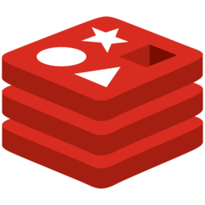
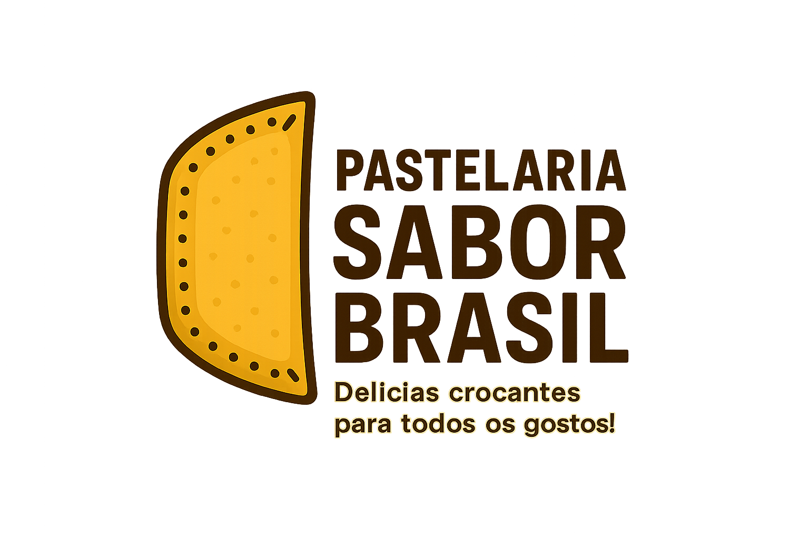
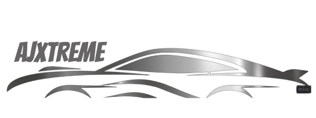

📦 Cluster Cassandra
Eu e meu grupo criamos um banco de dados com 3 nós no Docker utilizando a imagem Cassandra.
Tecnologias: Docker
🔗 Ver Projeto

📦 Cluster Redis
Eu e meu grupo criamos um banco de dados com 6 nós no Docker utilizando a imagem Redis.
Tecnologias: Vs Code, Docker
🔗 Ver Projeto📦 Cluster MongoDB
Eu e meu grupo criamos um banco de dados com 4 nós no Docker utilizando o MongoDB.
Tecnologias: Docker, MongoDB
🔗 Ver Projeto

🍽 Cardápio Digital
Site de cardápio digital com HTML, CSS e frameworks. CI/CD com GitHub Actions e deploy no Azure via Azure for Students.
Tecnologias: HTML, CSS, CI/CD, Azure, SonarQube
🔗 Ver Projeto

📱 Cadastro de Veículos (Mobile)
Aplicativo com banco de dados SQLite. Os dados inseridos em cada página são salvos e recuperados no cadastro final.
Tecnologias: .NET MAUI, XAML, C#, SQLite
🔗 Ver Projeto